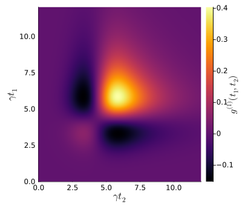
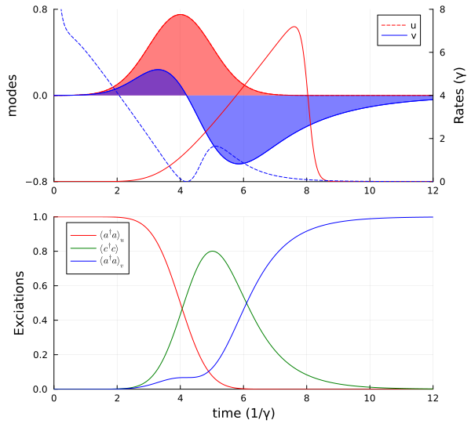
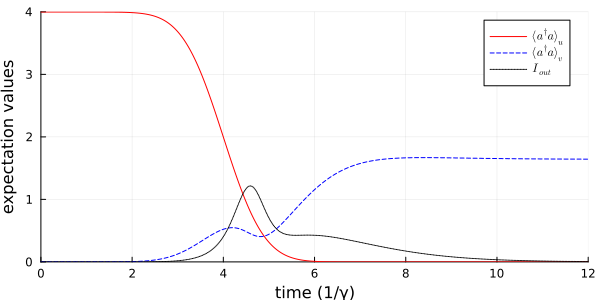

Cavity Scattering of a Single Photon
In this example, we simulate the scattering of a resonant single photon on an empty one-sided cavity. The temporal mode of the light pulse is a Gaussian with width $\sigma$ and the cavity has a decay rate $\gamma$. This system has been studied in A. Kiilerich, et al., Phys. Rev. Lett. 123, 123604 (2019).
We start by loading the needed packages and specifying the model.
using QuantumInputOutputusing SecondQuantizedAlgebrausing QuantumOpticsusing QuantumOpticsBase: daggerusing Plotsusing LaTeXStringsusing LinearAlgebra# symbolic Hilbert spacehu1 = FockSpace(:u1)hc1 = FockSpace(:c1)hv1 = FockSpace(:v1)h = hu1 ⊗ hc1 ⊗ hv1# symbolic operatorsau = Destroy(h, :a_u, 1)c = Destroy(h, :c, 2)av = Destroy(h, :a_v, 3)# symbolic parameters@variables g_u::Number Δ::Real γ::Real g_v::NumberWe use the symbolic operators and parameters to define the SLH triples and cascade them to obtain the Hamiltonian and Lindblad for the system.
G_u = SLH(1, g_u'*au, 0) # input cavityG_c = SLH(1, √(γ)*c, Δ*c'c) # system cavityG_v = SLH(1, g_v'*av, 0) # output cavityG_cas = ▷(G_u, G_c, G_v)H = hamiltonian(G_cas)(-0.5conj(g_u)*sqrt(γ))im * a_u * c' + (-0.5conj(g_u)*g_v)im * a_u * a_v' + (0.5g_u*sqrt(γ))im * a_u' * c + (0.5conj(g_v)*g_u)im * a_u' * a_v + (-0.5g_v*sqrt(γ))im * c * a_v' + Δ * c' * c + (0.5conj(g_v)*sqrt(γ))im * c' * a_vL = jump_operator(G_cas)[1] # only one Lindblad term in this exampleconj(g_u) * a_u + sqrt(γ) * c + conj(g_v) * a_vTo solve the dynamics of the system we translate the symbolic expressions into numeric operators (matrices) of QuantumOptics.jl. To do so, we define the numerical parameters and operator basis.
# numerical parametersγ_ = 1.0Δ_ = 0.0p_sym = [γ, Δ, g_v]p_num = [γ_, Δ_, 0] # g_v=0dict_p = Dict(p_sym .=> p_num)# Gaussian input modeσ = 1/γ_T_end = 12σu1(t) = 1/(sqrt(σ)*π^(1/4)) * exp(-(t - 4σ)^2 / (2*σ^2))T = [0:0.002:1;]*T_endΔT = T[2] - T[1]gu_t = coupling_input(u1, T)dict_p_t = Dict(g_u => gu_t)# numeric basesbu1 = FockBasis(1)bc1 = FockBasis(1)bv1 = FockBasis(1)b = bu1 ⊗ bc1 ⊗ bv1We now use the function to_numeric to create the numeric operators. If the kwarg time_parameter is provided the created operator is a time-dependent function.
H_QO = to_numeric(H, b; parameter = dict_p, time_parameter = dict_p_t)L_QO = to_numeric(L, b; parameter = dict_p, time_parameter = dict_p_t)To solve the dynamics we use the QuantumOptics.jl function timeevolution.master_dynamic.
# time-dependent function for timeevolution.master_dynamic that returns H(t), J(t) and Jd(t)function input_output_1(t, ρ) H = H_QO(t) J = [L_QO(t)] return H, J, dagger.(J)end;# initial stateψ0 = fockstate(bu1, 1) ⊗ fockstate(bc1, 0) ⊗ fockstate(bv1, 0)# time evolutiont_, ρt = timeevolution.master_dynamic(T, ψ0, input_output_1)We create the desired numerical operators to calculate expectation values.
au_qo = to_numeric(au, b)c_qo = to_numeric(c, b)av_qo = to_numeric(av, b)n_c_t = real.(expect(c_qo'*c_qo, ρt))n_u1_t = real.(expect(au_qo'*au_qo, ρt))In order to determine suitable temporal output modes we calculate the two-time autocorrelation function $g^{(1)}(t_1,t_2) = \langle L_s^\dagger(t_1) L_s(t_2) \rangle$ and diagonalize the matrix to obtain the eigenvalues with the corresponding eigenvectors. The eigenvalues correspond to the mean photon number $n_i$ in the corresponding temporal eigenvector mode $v_i$.
Ls(t) = gu_t(t)*au_qo + √(γ_)*c_qog1_m = correlation_matrix(T, ρt, H_QO, [L_QO], Ls)p = heatmap( T, T, real.(g1_m); c = :inferno, xlabel = L"\gamma t_2", ylabel = L"\gamma t_1", colorbar_title = L"g^{(1)}(t_1,t_2)", size = (400, 350),)p
The eigenvalues and corresponding eigenvectors are sorted in ascending order, which means the last eigenvalue corresponds to the highest populated temporal mode.
n = size(g1_m, 1)F = eigen(g1_m, (n-4):n)n_avg = round.(real.(F.values)*ΔT; digits = 3)modes = F.vectorsv_mode = (modes[:, end]) / sqrt(ΔT)@show n_avg[(end-1):end]n_avg[var"end" - 1:var"end"] = [0.0, 0.998]
We use now the mode with the highest mean photon number as our out-mode to determine its quantum state.
p_sym_2 = [γ, Δ]p_num_2 = [γ_, Δ_]dict_p_2 = Dict(p_sym_2 .=> p_num_2)# time-dependent coupling for the output mode $v(t)$gv_t = coupling_output(v_mode, T)dict_p_t_2 = Dict([g_u, g_v] .=> [gu_t, gv_t])H_QO_2 = to_numeric(H, b; parameter = dict_p_2, time_parameter = dict_p_t_2)L_QO_2 = to_numeric(L, b; parameter = dict_p_2, time_parameter = dict_p_t_2)function input_output_2(t, ρ) H = H_QO_2(t) J = [L_QO_2(t)] return H, J, dagger.(J)end;# time evolution for the system including the output cavityt_2, ρt_2 = timeevolution.master_dynamic(T, ψ0, input_output_2)# mean photon number in the output moden_v1_t = real.(expect(av_qo'*av_qo, ρt_2))p1 = plot(T, u1.(T); ls = :dash, label = "u", color = :red)plot!(p1, T, u1.(T); fillrange = 0, fillalpha = 0.5, color = :red, label = "")plot!(p1, T, real.(v_mode); color = :blue, label = "v")plot!(p1, T, real.(v_mode); fillrange = 0, fillalpha = 0.5, color = :blue, label = "")plot!( p1; xlims = (0, 12), ylims = (-0.8, 0.8), yticks = [-0.8, 0, 0.8], ylabel = "modes", legend = :best,)p1r = twinx(p1)plot!(p1r, T, abs2.(gu_t.(T)); color = :red, label = "")plot!(p1r, T[3:end], abs2.(gv_t.(T))[3:end]; color = :blue, ls = :dash, label = "")plot!(p1r; xlims = (0, 12), ylims = (0, 8), ylabel = "Rates (γ)")p2 = plot(T, n_u1_t; label = L"\langle a^\dagger a \rangle_u", color = :red)plot!(p2, T, n_c_t; label = L"\langle c^\dagger c \rangle", color = :green)plot!(p2, T, n_v1_t; label = L"\langle a^\dagger a \rangle_v", color = :blue)plot!( p2; xlims = (0, 12), ylims = (0, 1), xlabel = "time (1/γ)", ylabel = "Exciations", legend = :best,)plot(p1, p2; layout = (2, 1), size = (600, 550))
Cavity with phase noise
We slightly adapt the above example by assuming the initial pulse to be in a coherent state and adding phase noise to the cavity. This results in scattering into multiple modes.
# new basis of the systembu1_3 = FockBasis(12)bc1_3 = FockBasis(6)bv1_3 = FockBasis(6)b_3 = tensor(bu1_3, bc1_3, bv1_3)# new operators of the systemau_3 = embed(b_3, 1, destroy(bu1_3))c_3 = embed(b_3, 2, destroy(bc1_3))av_3 = embed(b_3, 3, destroy(bv1_3))cdc_3 = c_3'c_3# we use the same Hamiltonian as before but add a depasing term to the dissipationH_QO_3 = to_numeric(H, b_3; parameter = dict_p_2, time_parameter = dict_p_t_2)L_QO_3 = to_numeric(L, b_3; parameter = dict_p_2, time_parameter = dict_p_t_2)function input_output_3(t, ρ) H = H_QO_3(t) J = [L_QO_3(t), √(γ_)*cdc_3] return H, J, dagger.(J)end;Due to the larger Hilbert space the time evolution takes a few seconds.
ψ0_3 = coherentstate(bu1_3, 2) ⊗ fockstate(bc1_3, 0) ⊗ fockstate(bv1_3, 0)t_3, ρt_3 = timeevolution.master_dynamic(T, ψ0_3, input_output_3)L0(t) = √(γ_)*c_3 + gu_t(t)*au_3 + gv_t(t)*av_3I_out = [real(expect(dagger(L0(t_3[i]))*L0(t_3[i]), ρt_3[i])) for i = 1:length(t_3)]n_u1_t_3 = real.(expect(au'*au, ρt_3))n_v1_t_3 = real.(expect(av'*av, ρt_3))p = plot(t_3, n_u1_t_3; label = L"\langle a^\dagger a \rangle_u", color = :red)plot!(p, t_3, n_v1_t_3; label = L"\langle a^\dagger a \rangle_v", color = :blue, ls = :dash)plot!(p, t_3, I_out; label = L"I_{out}", color = :black, ls = :dot)plot!( p; xlims = (0, 12), ylims = (0, 4), xlabel = "time (1/γ)", ylabel = "expectation values", legend = :best, size = (600, 300),)p
Package versions
These results were obtained using the following versions:
using InteractiveUtilsversioninfo()using PkgPkg.status( [ "QuantumInputOutput", "SecondQuantizedAlgebra", "QuantumOptics", "Plots", "LaTeXStrings", ], mode = PKGMODE_MANIFEST,)Julia Version 1.13.0
Commit d1c37793dd2 (2026-09-09 19:00 UTC)
Build Info:
Official https://julialang.org release
Platform Info:
OS: Linux (x86_64-linux-gnu)
CPU: 4 × Intel(R) Xeon(R) Platinum 8370C CPU @ 2.80GHz
WORD_SIZE: 64
LLVM: libLLVM-20.1.8 (ORCJIT, icelake-server)
GC: Built with stock GC
Threads: 1 default, 0 interactive, 1 GC (on 4 virtual cores)
Environment:
JULIA_PKG_SERVER_REGISTRY_PREFERENCE = eager
JULIA_DEBUG = Documenter,Literate
JULIA_NUM_THREADS = 1
Status `~/work/QuantumInputOutput.jl/QuantumInputOutput.jl/docs/Manifest.toml`
⌅ [7d9fca2a] Arpack v0.5.3
⌅ [861a8166] Combinatorics v1.0.2
[d38c429a] Contour v0.6.3
⌅ [82cc6244] DataInterpolations v9.5.0
[459566f4] DiffEqCallbacks v4.19.3
[77a26b50] DiffEqNoiseProcess v5.36.3
[c87230d0] FFMPEG v0.4.5
[7a1cc6ca] FFTW v1.10.0
⌅ [53c48c17] FixedPointNumbers v0.8.6
[069b7b12] FunctionWrappers v1.1.3
[28b8d3ca] GR v0.73.27
[42fd0dbc] IterativeSolvers v0.9.4
[1019f520] JLFzf v0.1.11
[682c06a0] JSON v1.8.0
[0b1a1467] KrylovKit v0.10.4
[b964fa9f] LaTeXStrings v1.4.1
[23fbe1c1] Latexify v0.16.12
[7a12625a] LinearMaps v3.11.4
[442fdcdd] Measures v0.3.3
[d8a4904e] MutableArithmetics v1.8.0
[77ba4419] NaNMath v1.1.4
[e7bfaba1] NumericalIntegration v0.3.4
[1dea7af3] OrdinaryDiffEq v7.8.1
[1344f307] OrdinaryDiffEqLowOrderRK v2.2.5
[ccf2f8ad] PlotThemes v3.3.0
[995b91a9] PlotUtils v1.4.4
[91a5bcdd] Plots v1.41.7
[aea7be01] PrecompileTools v1.3.4
[18f9eda6] QuantumInputOutput v0.5.3 `~/work/QuantumInputOutput.jl/QuantumInputOutput.jl`
[5717a53b] QuantumInterface v0.4.4
[6e0679c1] QuantumOptics v1.2.9
[4f57444f] QuantumOpticsBase v0.5.15
[3cdcf5f2] RecipesBase v1.3.4
[01d81517] RecipesPipeline v0.6.12
[731186ca] RecursiveArrayTools v4.5.1
[189a3867] Reexport v1.2.2
[05181044] RelocatableFolders v1.0.1
[ae029012] Requires v1.3.1
[0bca4576] SciMLBase v3.53.2
[431bcebd] SciMLPublic v1.3.0
[6c6a2e73] Scratch v1.3.0
⌅ [f7aa4685] SecondQuantizedAlgebra v0.11.0
[992d4aef] Showoff v1.1.1
[276daf66] SpecialFunctions v2.9.0
[90137ffa] StaticArrays v1.9.20
[10745b16] Statistics v1.11.5
[2913bbd2] StatsBase v0.34.13
[789caeaf] StochasticDiffEq v7.2.0
[d1185830] SymbolicUtils v4.46.4
[0c5d862f] Symbolics v7.39.2
[8ea1fca8] TermInterface v2.0.0
[1cfade01] UnicodeFun v0.4.1
[41fe7b60] Unzip v0.2.0
[2a0f44e3] Base64 v1.11.0
[ade2ca70] Dates v1.11.0
[f43a241f] Downloads v1.7.0
[37e2e46d] LinearAlgebra v1.13.0
[44cfe95a] Pkg v1.13.0
[de0858da] Printf v1.11.0
[3fa0cd96] REPL v1.11.0
[9a3f8284] Random v1.11.0
[2f01184e] SparseArrays v1.13.0
[fa267f1f] TOML v1.0.3
[cf7118a7] UUIDs v1.11.0
Info Packages marked with ⌅ have new versions available but compatibility constraints restrict them from upgrading. To see why use `status --outdated -m`
This page was generated using Literate.jl.